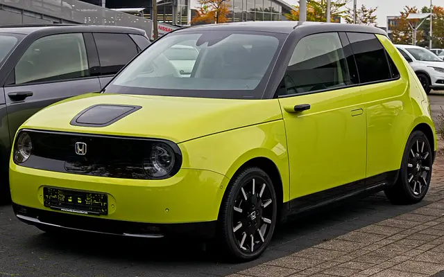

Par Motor › Precios por modelo › Honda e
Precio de segunda mano · noviembre de 2026¿Cuánto vale un Honda e de segunda mano?

Precio justo estimado de un Honda e usado en España, año por año, con los kilómetros normales para su edad y en buen estado: de 13.800 € a 24.600 €. Para tasar el tuyo con sus kilómetros reales y su estado, usa el tasador gratis.
Precios del Honda e por año
Honda e (2020–2024)
Precio de nuevo: e 136 CV, 36.000 € · e Advance 154 CV, 39.000 €
| Año | Km normales | e 136 CV · Eléctrico | e Advance 154 CV · Eléctrico |
|---|---|---|---|
| 2024 | 35.000 km | 22.700 € | 24.600 € |
| 2023 | 50.000 km | 20.600 € | 22.300 € |
| 2022 | 65.000 km | 18.600 € | 20.200 € |
| 2021 | 80.000 km | 16.200 € | 17.600 € |
| 2020 | 95.000 km | 13.800 € | 14.900 € |
Kilómetros normales: 15.000 al año en gasolina, híbridos y eléctricos, y 20.000 en diésel, con un máximo de 100.000 km (por encima no tasamos: el precio depende demasiado del historial de cada coche). Cifras redondeadas a 100 €.
Preguntas frecuentes
¿Cuánto vale un Honda e de segunda mano?
Según el año, la versión y los kilómetros, un Honda e usado vale hoy de 13.800 € a 24.600 € en España. El más barato de nuestra tabla es un e de 2020 (13.800 €) y el más caro un e Advance de 2024 (24.600 €). Son precios justos estimados entre particulares y profesionales, con los kilómetros normales para su edad y en buen estado.
¿Cuánto valor pierde un Honda e al año?
Con unos años encima, un Honda e pierde alrededor de un 12 % de su valor cada año (calculado sobre el e de la generación Honda e). Los primeros años la caída es mayor y a partir de los 70.000 km se acelera.
¿Qué motorizaciones tiene el Honda e?
En nuestra base de datos hay versiones eléctrico, en 1 generación: Honda e.
¿Cómo sé si me piden demasiado por un Honda e?
Abre el tasador de Par Motor, elige el Honda e, el año y los kilómetros reales, y escribe lo que te piden. Te diremos si está por debajo del precio justo (chollo) o por encima (caro). Es gratis y no pide registro ni matrícula.
Otros Honda
Compara su coste real
El precio de compra es solo una parte. Mira cuánto te costaría al mes con combustible, seguro, neumáticos, mantenimiento y lo que pierde de valor.
Abrir el comparador →